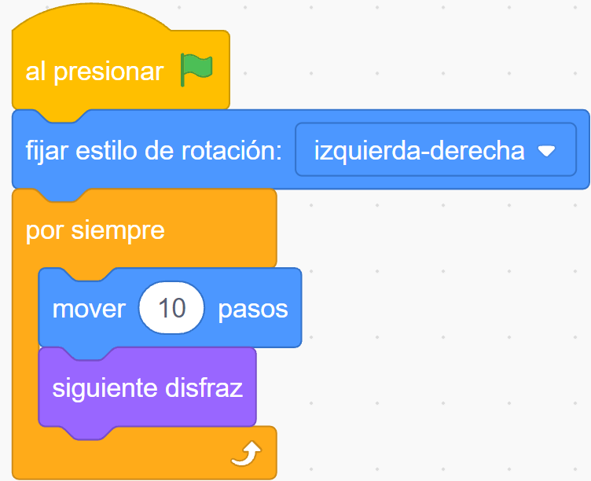

Nuestro primer programa
EL objetivo de esta tarea es hacer que Tobi se desplace de izquierda a derecha y de derecha a izquierda por la pantalla, cambiando de dirección cada vez que toca un borde lateral, como se ve en la siguiente animación:

|
El bloque al presionar ... indica el inicio del programa que se ejecutará cuando presionemos el botón de banderita verde: El siguiente bloque hace que Tobi gire 180° mirando hacia el lado contrario (y no se ponga patas para arriba), cuando le indiquemos que cambie de dirección. |
|
| El bloque por siempre (ciclo incondicionado) es muy usado a la hora de programar, ya que hace que todo lo que está dentro de su boca de cocodrilo se repita constantemente hasta que se detenga el programa (esto nos ahorra muchos bloques de programación). | |
|  |
Dentro de la boca del bloque por siempre tenemos el bloque mover ... pasos , el cual hace que Tobi se mueva (deslice) hacia donde esté mirando (por defecto está mirando a la derecha), la cantidad indicada (en este caso 10). A continuación Tobi cambia a su siguiente disfraz a los efectos de simular un paso, (sin este bloque más que caminar, Tobi estaría patinando :). Puedes mirar todos los disfraces de Tobi en la pestaña Disfraces. |
|
Tenemos un problema cuando Tobi llega al borde de la pantalla: desaparece. Para resolverlo tenemos el bloque rebotar si toca un borde lo que hace que cambie de dirección y comience a desplazarse en sentido contrario. Por último, el bloque esperar ... segundos -también muy usado- regula la velocidad del desplazamiento del personaje (se pueden usar números decimales). |